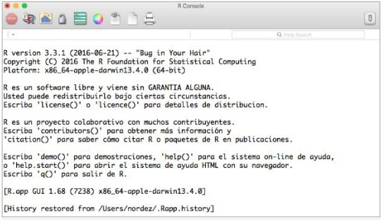
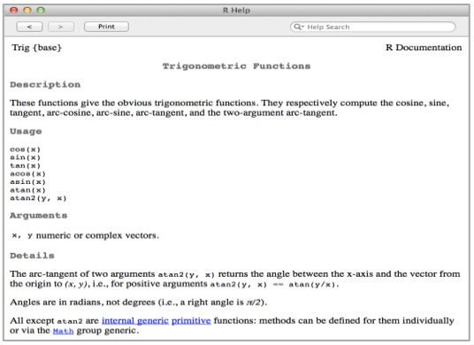

1.5 Primeros pasos con R
Tras haber seguido los pasos indicados en la sección anterior, deberíamos tener correctamente instalado el entorno R en nuestro sistema. En Windows y Mac OS X, como resultado de la instalación se creará un icono (que usualmente en Windows estará en el escritorio y en Mac OS X accesible a través del Launchpad) en el que al hacer clic lanzaremos el entorno de ejecución de R.
Al lanzar el entorno de ejecución en Windows y Mac OS X aparecerá una ventana. Esta ventana nos ofrecerá una consola (R console) que utilizaremos para poder interactuar con el entorno de R. La consola de R funciona de una manera similar a la de un intérprete de comandos de un sistema operativo clásico: teclearemos ahí nuestros comandos (denominados expresiones en R) y obtendremos a través de ella los resultados (incluyendo mensajes de error si algo va mal).

Figura 5. Ejemplo de consola de R (en Mac OS X).
En Linux, para poder acceder a esta consola simplemente será necesario ejecutar en el intérprete de comandos del sistema operativo la orden R (en mayúsculas). En este caso no aparecerá una nueva ventana, sino que usaremos la ventana del intérprete de comandos como consola de R.
En la consola podemos ver que existe una marca (denominada prompt), que usualmente es el símbolo de mayor que (>) y que nos indica que el sistema está esperando a que tecleemos nuestros comandos. Veremos en las siguientes secciones algunos comandos básicos con los que empezar a trabajar con R en la práctica.
1.5.1 Realizando operaciones basicas
La forma más sencilla de empezar a trabajar con R, es utilizando el software como si de una calculadora avanzada se tratase. Simplemente tendremos que escribir la expresión que queramos evaluar en la consola y pulsar la tecla de fin de línea (enter). R nos devolverá el resultado impreso en la consola.
Por ejemplo, para sumar dos números:
2+3
# [1] 5 Aunque se pueden llevar a cabo todo tipo de operaciones aritméticas:
2*3
# [1] 6
2/3
# [1] 0.6666667
2^3
# [1] 8
2**3
# [1] 8
3%%2
# [1] 1
(2.2+3.5)*2.1
# [1] 11.97
1+2+3-4
# [1] 2
5%/%2
# [1] 2Como se puede ver, las operaciones básicas utilizan los operadores habitualmente empleados en los lenguajes de programación (+, -, *, /), teniendo en cuenta que en el caso del operador módulo (resto de la división entera de dos números) se utiliza %% (cuando lo más usual en otros lenguajes es usar %), que es posible realizar potenciación tanto con el carácter ^ como con el doble asterisco ** y que si queremos que la operación de división trate a sus argumentos como números enteros, deberemos utilizar el operador %/%.
También resulta interesante comprobar qué pasa cuando realizamos operaciones que resultan en un indeterminado o en infinito:
2/0
# [1] Inf
Inf/Inf
# [1] NaN
0/0
# [1] NaN
-Inf/2
# [1] -Inf Como se puede ver este tipo de operaciones están soportadas en el entorno de R pudiendo utilizarse el símbolo Inf para referirse a infinito y NaN (Not a Number) para referirse a valores indeterminados.
1.5.2 Llamando a funciones
Además de los operadores básicos, R proporciona todo un conjunto de funciones que podemos utilizar en nuestras expresiones. Básicamente la llamada a funciones desde la consola de R funciona de una manera similar a la de cualquier lenguaje de programación: proporcionaremos el nombre de la función y sus argumentos y obtendremos su resultado impreso en consola. Veamos algunos ejemplos:
exp(1)
# [1] 2.718282
log(exp(1))
# [1] 1
log10(10)
# [1] 1
log2(2)
# [1] 1
sqrt(4)
# [1] 2
cos(pi)
# [1] -1
sin(pi)
# [1] 1.224647e-16
tan(pi)
# [1] -1.224647e-16
abs(-2.4)
# [1] 2.4
ceiling(-2.4)
# [1] -2
floor(-2.4)
# [1] -3
round(-2.3894, 1)
# [1] -2.4 Donde quizás nos llamen la atención algunas cosas: el uso del símbolo pi para referirse a la constante del mismo nombre, que existen distintas funciones para operar con el logaritmo dependiendo de su base (log -para calcular el logaritmo natural o neperiano-, log2 y log10) o que la operación seno de pi, que debería devolver un cero, en la práctica nos devuelve un valor distinto a cero, pero muy pequeño (epsilon).
También es posible pasar argumentos a funciones utilizando explícitamente los nombres de dichos argumentos, en lugar de la posición. Así por ejemplo, si vemos la documentación de la función round (se presenta en la siguiente sección cómo hacer esto) observaremos que recibe dos argumentos.
El primer argumento (denominado x) es el número a redondear, mientras que el segundo argumento (denominado digits) indica el número de decimales que deseamos preservar al hacer el redondeo. Sabiendo esto, podemos invocar a esta función no solo con los parámetros en orden (como en los ejemplos anteriores), sino también por ejemplo como:
round(-2.3894, digits=1)
# [1] -2.4
round(digits=1, x=-2.3894)
# [1] -2.4 1.5.3 Accediendo a la ayuda de R
Es posible que en algún momento queramos trabajar con alguna función y no recordemos exactamente cuál es su nombre, o no sepamos cómo utilizarla (por ejemplo, qué argumentos recibe). Para resolver este tipo de problemas podemos echar mano de la ayuda de R. En particular, dos funciones de ayuda resultan especialmente útiles:
- La función apropos, que se utiliza para encontrar nombres de funciones u otros elementos a partir de una cadena de texto que queremos buscar (para indicar que el argumento es una cadena de texto, usaremos comillas simples o dobles). Por ejemplo:
apropos("round")
# [1] "round" "round.Date" "round.POSIXt" - La función help que nos permite acceder a la ayuda de R. Por ejemplo, si ejecutamos en la consola de R la expresión help(cos) (o simplemente ?cos) veremos aparecer una ventana emergente como la que se muestra en la figura a continuación:

Figura 6. Ventana de ayuda de R.
Además podemos acceder a la documentación de R simplemente tecleando en la consola la expresión help.start() esto debería abrir un navegador donde podremos navegar a través de la documentación en formato HTML.
1.5.4 Trabajando con variables
En algunas ocasiones, cuando estemos realizando una serie de operaciones en la consola de R, necesitaremos poder almacenar resultados intermedios para poder referirnos a ellos en operaciones futuras. Para poder hacer esto, utilizaremos variables que se definen con un nombre y un valor, de forma que podamos acceder en el futuro al valor a partir del nombre.
Al decidir nuestros nombres de variables en R tenemos que tener en cuenta las reglas de nombramiento de símbolos de R:
R distingue entre mayúsculas y minúsculas.
Usualmente se permite utilizar toda clase de símbolos alfanuméricos (incluyendo caracteres acentuados, ñ, etc.) además del punto «.» y del guion bajo «_». Eso sí, los nombres deben empezar por «.» o por una letra y si empiezan por «.» entonces el segundo carácter no debería ser un número.
El entorno no impone límites a la longitud de los nombres de los símbolos (aunque por motivos prácticos no deberíamos hacerlos demasiado largos).
Para poder definir una variable y asignarle un valor, utilizaremos el operador de asignación. Aunque el signo de igualdad (=) esta soportado como operador de asignación en versiones recientes de R, lo mas habitual es emplear en las asignaciones el simbolo <- (denominado gets), por ejemplo:
x<-2
x+3
# [1] 5
log2(x)
# [1] 1
x
# [1] 2 Nótese que para poder obtener el valor de una variable por consola, simplemente teclearemos su nombre seguido de un fin de línea.
Si en un determinado momento no recordamos qué variables hemos definido, es sencillo obtener un listado de las variables declaradas utilizando la función ls:
x<-2
y<-6
ls()
# [1] "x" "y" También es posible borrar una variable que hemos definido previamente, simplemente utilizando la función rm:
x<-2;y<-6
ls()
# [1] "x" "y"
rm(x)
ls()
# [1] "y" En este ejemplo se puede ver también que hemos utilizado la posibilidad de combinar varias expresiones en una simple línea (a la hora de asignar valores a x e y), separándolas mediante punto y coma.
1.5.5 Instalación de paquetes
Como comentamos con anterioridad, una de las ventajas que ofrece el entorno R es que es fácilmente extensible por medio de un mecanismo de paquetes. Actualmente existen más de 8.000 paquetes disponibles para su instalación, lo que permite que en R podamos encontrar implementaciones para casi cualquier clase de técnica de análisis de datos que se nos ocurra.
Sin embargo, estos paquetes no suelen formar parte por defecto del entorno R, así que será necesario instalarlos manualmente cuando los necesitemos. Normalmente el proceso para utilizar un paquete requiere de los siguientes pasos:
Buscar el paquete que implementa la funcionalidad necesaria, bien utilizando buscadores horizontales, como Google, bien con buscadores verticales como podría ser Crantastic o Rseek. También podrían ser de ayuda en este sentido portales específicos como R-Forge o Bioconductor (este último centrado en aplicaciones en el dominio de la Biología).
Una vez sabemos el nombre del paquete a utilizar, lo instalaremos utilizando la función install.packages. Por ejemplo, si queremos instalar un paquete denominado digest ejecutaríamos en la consola de R la expresión:
install.packages("digest", dependencies=TRUE) Que como podemos ver indica el nombre del paquete a instalar y establece que se instalen también otros paquetes de los que pueda depender este. Como resultado de ejecutar esta expresión, aparecerá una ventana que nos permitirá seleccionar el servidor CRAN desde el que queremos hacer la instalación:
Figura 7. Ventana de selección de servidor CRAN (Mac OS X).
Una vez seleccionado el servidor, y siempre que nuestra versión de R sea compatible con la versión para que el paquete fue implementado, el sistema procederá a la descarga e instalación de todo lo necesario.
- Cuando el paquete está ya instalado, tenemos que decirle al entorno que queremos que lo cargue, para poder utilizarlo. Para ello emplearemos la función library. Por ejemplo:
library(digest) 1.5.6 Ejecutando expresiones desde un fichero de texto
Hasta ahora hemos visto cómo podemos ejecutar directamente expresiones tecleándolas una a una en la consola de R. Sin embargo, es posible también indicarle al sistema que ejecute un conjunto de expresiones que previamente hayamos escrito en un fichero de texto, al que se le suele denominar script.
Esto resulta de utilidad por ejemplo cuando queremos ejecutar varias veces una secuencia larga de operaciones.
Para poder cargar y ejecutar las expresiones desde fichero utilizaremos la función source. Por ejemplo, supongamos que disponemos de un fichero (denominado /Users/user1/cmds.r) que tiene el siguiente contenido:
# Esto es un comentario
z1<-(2*x)+y
print(z1)
z2<-(2*y)+x
print(z2) Para ejecutar las expresiones contenidas en este fichero, podemos teclear la siguiente secuencia de operaciones en la consola de R:
x<-2
y<-3
source("cmds.r")
# [1] 7
# [1] 8 A la hora de hacer nuestros ficheros con expresiones R, tenemos que tener en cuenta un par de aspectos de interés:
Aunque no es obligatorio, se suele utilizar por convenio una extensión en el fichero (usualmente .R o .r) que nos indique con qué tipo de fichero estamos trabajando.
Nótese que para poder hacer que nuestros resultados se muestren en consola, hemos utilizado la función print. Cuando trabajamos con la consola en modo interactivo, los resultados se imprimen directamente a la salida, sin necesidad de utilizar print. Pero cuando ejecutamos source por defecto los resultados no se imprimen, así que tenemos que hacerlo explícitamente con la llamada a esta función.